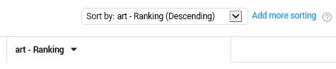
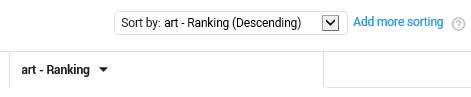

First, add the ranking field of the issue:

Then, sort on this field:

Ranking is the document score or relevance score for each document. This score is calculated per issue for all documents in the project. The higher the score (ranging from 0.1 to 1.0), the more responsive the document is for a specific issue. For each new training batch, the relevance score is recalculated and documents with the highest ranking are added to the batch.
In the Document List, you can sort the documents according to this ranking or relevance score:
First, add the ranking field of the issue:
Then, sort on this field:
